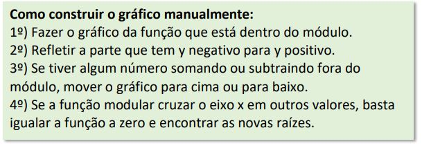

O módulo de um número real A, é denotado por: |a|, que corresponde a distância desse número a zero na reta numérica. Essa distância sempre será positiva, então o módulo sempre será positivo.
| - 8 | = 8
| + 8 | = 8
Quando temos uma incógnita dentro do módulo, devemos lembrar que este valor pode ser tanto positivo quanto negativo.
|X| = 10 ou seja, X pode ser +10, ou -10.
Função modular é uma função de f(x), que vai do zero até o mais infinito.
Ex: f(x) = |x²-1|
A construção do gráfico da função modular condiz com a construção do gráfico da função dentro do módulo, que pode ser a função Afim, Quadrática, Exponencial, Logarítmica, etc. Com um espelhamento na parte negativa do y.
Voltar